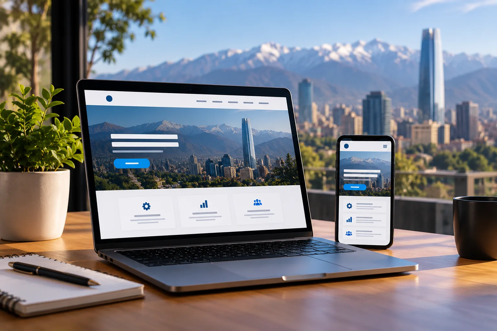

Cómo crear una página web para un negocio en Chile en 2026

Crear una página web para un negocio no consiste simplemente en elegir una plantilla, agregar un logo y publicar.
Para que el sitio realmente sea útil, primero hay que definir qué debe lograr: presentar la empresa, generar consultas, captar potenciales clientes, vender productos o ayudar a que el negocio sea encontrado en Google.
En esta guía veremos, paso a paso, qué necesitas para crear una página web profesional para un negocio en Chile en 2026, desde la elección del dominio hasta las verificaciones que conviene realizar antes de publicarla.
1. Define qué debe lograr tu página web
Antes de contratar hosting, comprar un dominio o comenzar con el diseño, define el objetivo principal del sitio.
Por ejemplo, un negocio puede necesitar una web para:
- Recibir consultas y cotizaciones.
- Mostrar sus servicios y trabajos realizados.
- Dirigir potenciales clientes hacia WhatsApp.
- Construir una presencia profesional para su marca.
- Trabajar el posicionamiento orgánico en buscadores.
- Vender productos o servicios por internet.
Esta decisión influirá en prácticamente todo lo que viene después: la estructura del sitio, las funciones necesarias, el contenido, el presupuesto y la tecnología utilizada.
2. Elige un dominio para tu negocio
El dominio es la dirección que las personas utilizarán para encontrar tu sitio, por ejemplo tunegocio.cl. Conviene elegir un nombre corto, fácil de escribir y relacionado directamente con tu marca.
Para un negocio que opera principalmente en Chile, un dominio .cl puede ser una opción natural. Si el proyecto también apunta a otros países, puedes evaluar extensiones como .com según la estrategia de la marca.
Antes de registrarlo, revisa cuidadosamente la escritura del nombre. Cambiar de dominio después de haber construido presencia digital puede implicar trabajo adicional en enlaces, correos corporativos y SEO.
3. Elige dónde alojar la página web
Una vez definido el dominio, necesitas decidir dónde funcionará el sitio. Aquí aparecen conceptos como hosting, plataformas administradas y servicios de despliegue.
La elección depende del tipo de proyecto. Un sitio corporativo estático, una web construida con WordPress y una tienda online tienen necesidades técnicas diferentes.
- Hosting tradicional: puede alojar WordPress, archivos, bases de datos y cuentas de correo, dependiendo del proveedor.
- Plataformas para sitios estáticos: son apropiadas para proyectos desarrollados con HTML, CSS y JavaScript que no necesitan un backend tradicional.
- Plataformas de comercio electrónico: incorporan herramientas específicas para catálogo, carrito, pagos y gestión de pedidos.
No conviene elegir únicamente por precio. También debes considerar soporte, seguridad, rendimiento, copias de respaldo y las necesidades futuras del negocio.
4. Decide entre una landing page y un sitio web completo
No todos los negocios necesitan la misma estructura. Si estás promocionando un servicio o una campaña específica, una landing page puede concentrar al visitante en una sola acción.
Si necesitas presentar varios servicios, desarrollar contenido, trabajar el posicionamiento orgánico o construir una presencia digital más amplia, probablemente necesitarás un sitio con varias páginas.
En nuestra guía sobre landing page vs sitio web explicamos con más detalle las diferencias entre ambas alternativas y cuándo puede resultar útil cada estructura.
5. Diseña la web pensando en el cliente
El diseño no debería comenzar preguntando solamente qué colores o efectos visuales utilizar. Primero hay que entender qué información necesita encontrar una persona que llega al sitio.
Una estructura comercial sencilla puede responder rápidamente preguntas como:
- ¿Qué hace este negocio?
- ¿Qué producto o servicio ofrece?
- ¿Por qué debería considerarlo?
- ¿Cómo puedo solicitar información o cotizar?
La jerarquía visual, los textos, las imágenes y los botones deben facilitar ese recorrido. Una página atractiva que dificulta encontrar la información importante sigue teniendo un problema de experiencia de usuario.
6. Asegúrate de que funcione correctamente en celulares
Una página profesional debe adaptarse correctamente a distintos tamaños de pantalla. No basta con reducir el contenido de escritorio: navegación, botones, formularios, imágenes y textos deben seguir siendo cómodos de usar desde un teléfono.
Antes de publicar, prueba al menos el menú, los enlaces, los formularios y las principales llamadas a la acción en diferentes tamaños de pantalla.
7. Facilita el contacto con WhatsApp y formularios
Si el objetivo de la página es generar oportunidades comerciales, el visitante debe encontrar fácilmente una forma de contactar al negocio.
WhatsApp puede ser especialmente útil cuando la atención comercial se realiza directamente por mensajería. También puedes incorporar un formulario para quienes prefieran dejar sus datos o explicar con mayor detalle lo que necesitan.
Lo importante es que cada llamada a la acción tenga un propósito claro. Botones como Solicitar cotización, Hablar por WhatsApp o Agendar una consulta indican al visitante cuál es el siguiente paso.
Si quieres profundizar en esta parte, revisa nuestra guía sobre cómo convertir visitas en clientes con tu página web .
8. Prepara el sitio para SEO
El SEO no debería agregarse solamente después de terminar la página. La estructura del sitio, las URLs y el contenido deberían planificarse considerando también cómo los buscadores podrán interpretar cada página.
Como base, revisa:
- Un título único y descriptivo para cada página.
- Una meta descripción coherente con el contenido.
- Un solo encabezado principal que represente claramente el tema.
- Encabezados secundarios organizados de forma lógica.
- URLs claras y comprensibles.
- Enlaces internos entre contenidos relacionados.
- Texto alternativo apropiado para las imágenes relevantes.
- Una versión móvil correctamente implementada.
También conviene definir qué páginas realmente deberían aparecer en los resultados de búsqueda y utilizar correctamente elementos como canonical, sitemap y robots según la arquitectura del proyecto.
9. Configura medición y analítica
Publicar la web es el comienzo, no el final. Para saber si está cumpliendo su objetivo necesitas medir lo que ocurre después.
Dependiendo del proyecto, puedes registrar acciones como:
- Visitas a páginas importantes.
- Clics en botones de WhatsApp.
- Envíos de formularios.
- Solicitudes de cotización.
- Otras conversiones relevantes para el negocio.
Herramientas de analítica y plataformas para webmasters pueden ayudarte a detectar problemas y entender cómo las personas encuentran y utilizan el sitio. Lo importante es definir primero qué acciones representan resultados reales para tu negocio.
10. Revisa seguridad, HTTPS y mantenimiento
Una web profesional también necesita una base técnica confiable. El sitio debería utilizar HTTPS para proteger la comunicación entre el navegador y el servidor, especialmente cuando existen formularios u otros intercambios de información.
El mantenimiento dependerá de la tecnología utilizada. Un proyecto con WordPress, plugins y base de datos requiere tareas diferentes a un sitio estático desarrollado con HTML, CSS y JavaScript.
Como mínimo, conviene considerar:
- Certificado SSL y navegación mediante HTTPS.
- Actualizaciones de la plataforma y sus componentes cuando corresponda.
- Copias de respaldo según el tipo de proyecto.
- Revisión periódica de formularios y enlaces.
- Control de accesos y contraseñas administrativas.
11. ¿Cuánto cuesta crear una página web en Chile?
El presupuesto puede cambiar considerablemente según el alcance del proyecto. Una página informativa sencilla no requiere el mismo trabajo que una web con diseño personalizado, varias secciones, integraciones, estrategia SEO o comercio electrónico.
Además del desarrollo inicial, considera posibles costos de dominio, hosting, mantenimiento, herramientas externas y servicios adicionales que necesite el proyecto.
Si estás evaluando presupuesto, revisa nuestra guía sobre cuánto cuesta una página web en Chile , donde explicamos los factores que influyen en el valor de un proyecto.
12. Errores que conviene evitar
Muchos problemas aparecen cuando se comienza por el diseño sin definir antes el objetivo y la estructura del proyecto.
- Elegir una plataforma solamente porque es la opción más barata.
- Crear la web sin definir qué acción debe realizar el visitante.
- Diseñar únicamente para escritorio.
- Publicar textos genéricos que no explican claramente el servicio.
- Ocultar o dificultar las formas de contacto.
- Olvidar títulos, descripciones, URLs y otros elementos básicos de SEO.
- Publicar sin comprobar formularios, botones y enlaces.
- No configurar ninguna forma de medir resultados.
13. Checklist antes de publicar tu página web
Antes de lanzar el sitio, realiza una última revisión:
- El dominio correcto está conectado.
- HTTPS funciona correctamente.
- La navegación funciona tanto en computador como en celular.
- Los botones y enlaces llevan al destino correcto.
- WhatsApp abre la conversación o mensaje previsto.
- Los formularios se envían y reciben correctamente.
- Los títulos y descripciones SEO están definidos.
- Las imágenes importantes tienen texto alternativo apropiado.
- No existen páginas o enlaces rotos.
- La medición de las acciones importantes está configurada.
Después de publicar, realiza nuevamente las acciones principales como si fueras un cliente. Una comprobación final puede detectar problemas que no aparecieron durante el desarrollo.
Conclusión
Crear una página web para un negocio implica mucho más que conseguir un diseño atractivo. Dominio, alojamiento, estructura, experiencia móvil, contenido, SEO, medición y mantenimiento forman parte del mismo proyecto.
No todos los negocios necesitan una plataforma compleja. Lo importante es construir una solución adecuada al objetivo actual y que pueda evolucionar cuando las necesidades del negocio cambien.
¿Necesitas una página web para tu negocio?
En AnnovaTech podemos ayudarte a definir y desarrollar una solución adaptada a los objetivos de tu proyecto.
Solicitar propuesta